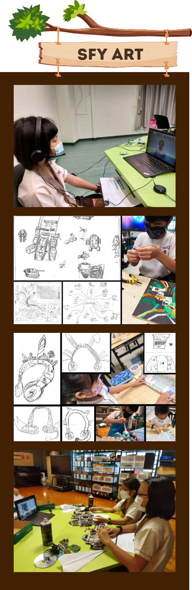

SINGAPORE YOUTH FESTIVAL
Our student artists have done extremely well for
Singapore Youth Festival 2021 Art Exhibition.
This year, our school submitted 3 collaborative
artworks for the exhibition. The submitted
artworks were chosen to be showcased in a
virtual exhibition. 2 of the artworks were
awarded the Certificate of Recognition (Special Mention)
and 1 artwork was awarded the Certificate of Recognition.
On 29 June 2021, our student artists were honoured
to be given the opportunity to present their
artwork and conduct a virtual activity with Mr. Chan Chun Sing,
Minister of Education and Ms Chong Siak Ching,
Chief Executive Officer of National Gallery Singapore.
